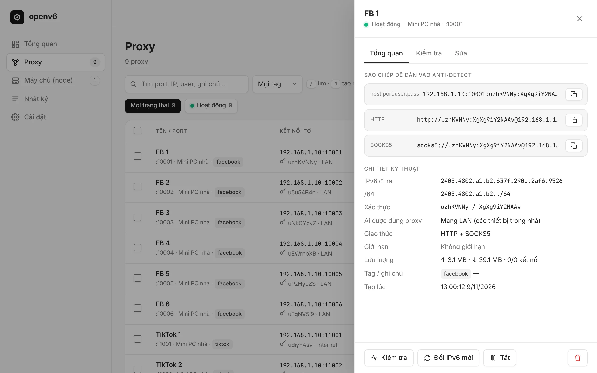
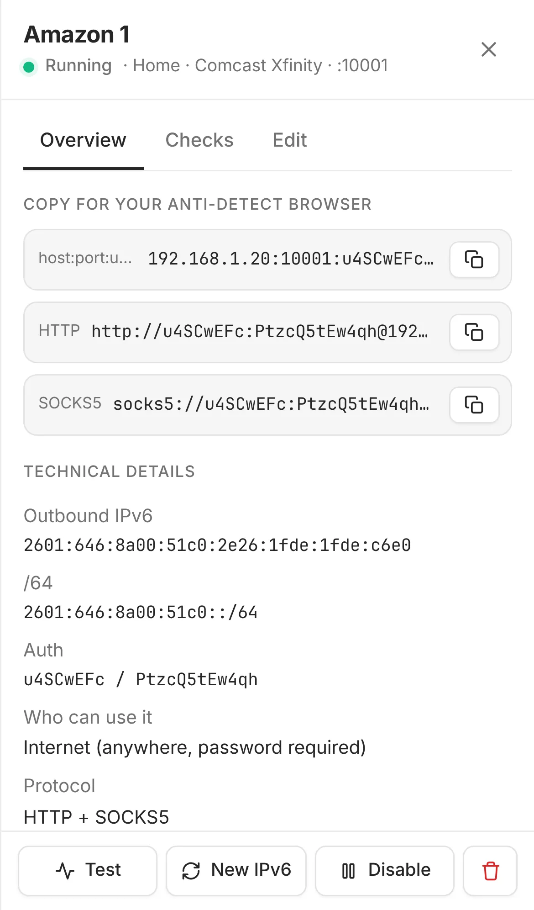

MultiloginGoLoginDolphin {Anty}AdsPowerixBrowserLinken Sphere 2MoreLoginIncognitonKameleoOcto BrowserUndetectable
VMLoginLalicatBitBrowserHidemiumGenLoginNstbrowserHubstudioVisionMuLoginClonBrowserGhost Browser
0
0
$0
1
openv6-setup-windows-amd64.exe2
FB 01 · FB 02 · … · FB 503
192.168.1.10:10001:u7Kx:9fQe…
9:41
